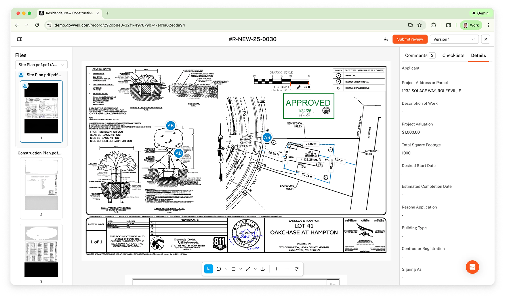

GovWell Plan Review
Modernizing the plan review process for local governments

Context
This was my first major project after joining GovWell: designing a 0→1 integrated Plan Review experience that would allow government staff to complete an entire permit record—from intake to decision—without leaving our platform.
During early discovery calls, we noticed a major gap: customers were exporting plan sets and switching to third-party tools to complete core review workflows. That created user friction, inconsistent records, and broken audit trails. Closing this gap became critical to launching a competitive permitting solution.
The Challenge
Local governments struggle with outdated, paper-heavy plan review processes that are:
- Time-consuming
- Error-prone
- Non-collaborative
- Lacking transparency for both reviewers and applicants
Reviewers and applicants need a modern, digital workflow that:
- Reduces repetitive tasks
- Centralizes feedback
- Enables faster turnaround
- Provides a single source of truth across departments
The User
Municipal plan reviewers are public servants managing heavy workloads of building applications. They vary significantly in:
- Technical proficiency (from novice to expert)
- Role (planning, fire, engineering, zoning)
- Department size and structure
- Available time
Designing a tool for them required striking the right balance: simple enough for a junior reviewer, powerful enough for a seasoned inspector.
Understanding the Problems
Problem 1 — Incomplete end-to-end permit workflows
Description: Reviewers couldn't complete plan reviews inside GovWell; they had to export PDFs to external tools. This created data fragmentation, slowed teams down, and made GovWell feel incomplete.
"I always end up leaving GovWell for Bluebeam—there's no way to actually review here." — Plan Reviewer
Problem 2 — Inability to give clear, async feedback on plan revisions
Description: Reviewers had no structured way to provide comments or request revisions. This forced them into email threads or sticky notes on printed plans.
"I leave notes on paper and scan them back in… it's messy and things get lost." — Plan Reviewer
Problem 3 — Long turnaround times
Description: Without digital workflows, review cycles were slow and untrackable. Users couldn't easily identify what changed between versions or who was waiting on whom.
"We spend so much time just figuring out what changed from one upload to the next." — Plan Reviewer
Problem 4 — No auditability or accountability of feedback
Description: Feedback was scattered across email, PDFs, physical copies, and shared drives. No centralized record meant no consistency, no oversight, and no reliable history.
"There's no paper trail when multiple departments are involved." — Planning Department Manager
The Solution
01 Markups & Measurements
To solve end-to-end workflow gaps, we introduced native tools for drawing shapes and markups, measuring distances and areas, and commenting directly on plan sheets. This allowed all review work to happen within GovWell—no exports needed.

02 Real-Time Collaboration
Multiple reviewers can now collaborate on the same plan set simultaneously. Features included live cursors, shared annotations, role-based visibility, and instant autosave. This ensured departments stayed aligned without switching tools.

03 Automated Corrections Reports
We automated the process of turning markups into structured correction items. Now reviewers can convert annotations into standardized correction reports, send them to applicants, and reduce manual work while ensuring consistency. This cut out hours of manual PDF editing per review cycle.

04 Stamp Creation & Management
Inspectors often use stamps for approvals, rejections, or conditional notes. We added custom and agency-provided stamp uploads, drag-to-place functionality, resize and rotation, and audit logging of who applied what stamp and when.

Business Impact
This project resulted in [insert results: reduced turnaround time / increased adoption / X% more reviews completed internally].
Examples you can include:
- X% faster review turnaround
- Y% reduction in email follow-ups
- Z% of reviewers completing plan reviews inside GovWell
- Increased trust & adoption among pilot agencies
You can also incorporate screenshots or Slack messages from customers reacting positively to the launch.
Feedback & Iterations
Through weekly feedback sessions with planning and engineering reviewers, we made iterative improvements:
Stamps Configuration
- Improved placement controls
- Added agency-wide stamp presets
- Allowed free movement and layering
Markup Editing
- Precision resizing
- Color and style controls
- Undo/redo improvements
File Overlay
- Side-by-side version comparison
- Overlay transparency slider
- Highlighting changes between uploads
Other Enhancements
- Faster PDF rendering
- Improved loading of large plan sets
- Clearer UI hierarchy for annotations vs. comments
Learnings
- Meet reviewers where they are. Many aren't designers or engineers—simplicity wins.
- Government workflows depend on accountability. Audit trails weren't optional; they were essential.
- 0→1 features require tight collaboration. Fast cycles with engineering and CTO alignment were crucial to shipping meaningfully in eight weeks.
- Adoption is earned. The easier we made the workflow, the faster teams embraced it.
Conclusion
The Plan Review experience transformed GovWell from a permitting intake tool into a fully integrated review platform. By closing the workflow gap, we increased product stickiness, improved turnaround times, and helped agencies modernize one of the most painful steps in permitting.
Testimonials
"The new Plan Review Toolkit has completely transformed how we work. Being able to move stamps and edit markups directly on the plans saves us hours every week." — Plan Reviewer, City Planning Department
"The version comparison feature is a game-changer. We can instantly see what changed between submissions, which makes our reviews so much more efficient." — Building Inspector
"Finally, a digital solution that actually works for government. The transparency and tracking features have improved communication with applicants significantly." — Planning Director